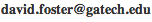

About Me
Please see the new About page for accurate information.
{kind=link}
My name is David Foster and I'm a recent graduate of Georgia Tech looking for interesting projects to take on.
If you are a Georgia Tech student, then you will benefit most from the scripts posted on this site. On the other hand if you are an employer, read on to learn about my qualifications.
Biography
I initially discovered computers when I was 4 and starting programming them at 6. Since then, programming has been one of my most enduring hobbies. Beyond that I enjoy playing tennis, badminton, and pool; watching Japanese anime; reading; and learning about spoken languages (as well as programming languages).
Work Objectives
I enjoy working on backends and infrastructure, the plumbing that keeps everything working. In the past, networking and software development tools have proven to be the most interesting specific domains.
I am especially passionate about digital preservation (i.e. backup, archival, emulation, virtualization, porting) and anime (i.e. distribution, playback, transcoding). I will be thrilled to work on any project in these areas.
Experience
Personal Experience- started programming at age 6
- can program in many languages
- programmed numerous personal projects
- developed a Java decompiler (in Java) that supports most standard Java-language constructs (including finally blocks)
- worked with robots and embedded systems in robotics clubs
- using my knowledge of algorithms to compete in programming competitons
- Finalist at the 2008 ACM International Collegiate Programming Competition
- Microsoft (Nov 2009 – Present)
- Created a scalable system to validate all content published to http://windows.microsoft.com/
- Google (Summer 2008)
- Designed and implemented the layout system of a user interface designer program
- Developed a JavaScript drag and drop system
- Air2Web (Summer 2007)
- Developed a scalable implementation of the Sametime instant-messaging protocol that supports thousands of concurrent users
- Developed an XML-based tool for testing SMPP SMSC servers
- Intercept Technology Inc. (Summer 2006)
- Developed a C/C++ refactoring tool
- National Computer Camps, Inc. (Summers 2002, 2004-05)
- Authored a set of 33 instructional worksheets for learning x86 Assembly language
- Responsible for teaching campers how to write programs in Java, C++, x86 Assembly, and BASIC
More Information
| Projects | |
| Activities | |
| Skills |
Contact Me
Feel free to email me at .